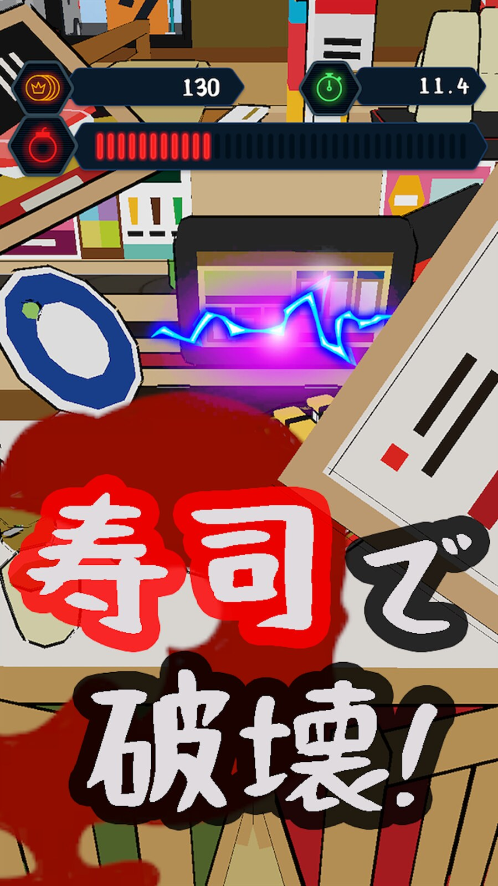
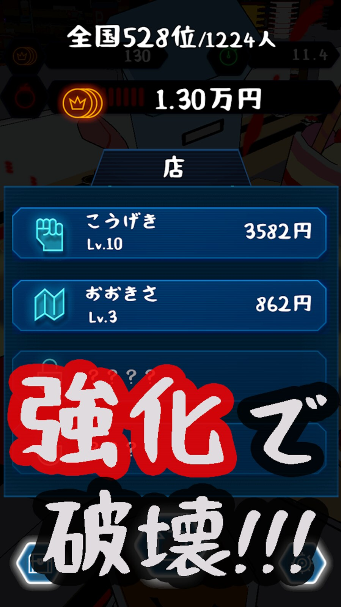

寿司をタップで発射
画面をタップすると寿司が一直線に飛んでいきます。狙いを定め、壊したい場所へ次々と一貫を撃ち込みます。
SUSHI × DESTRUCTION
マグロもサーモンも、今日は弾。寿司を飛ばして回転寿司店や建物をド派手に壊す、30秒の爽快アクションです。お気に入りの一貫を育てて、さらに大きな破壊へ。


TODAY'S SPECIAL
選んだ寿司を画面の奥へ飛ばすと、カウンターも看板も建物も巻き込んで崩れていきます。必要なのはタップだけ。
小さな一貫から始めて、育てて、壊す。寿司と物理演算が生む、予想外の爽快感を味わえます。
FEATURES
気軽なタップ操作の中に、寿司集め、アップグレード、ステージ攻略を重ねました。
画面をタップすると寿司が一直線に飛んでいきます。狙いを定め、壊したい場所へ次々と一貫を撃ち込みます。
マグロ、サーモン、エビ、いくら。遊ぶほど寿司の種類が増え、お気に入りのネタで建物を壊せます。
攻撃力、大きさ、連射、寿司の解放を強化。小さかった一貫が、街を揺らす主役へ育っていきます。
GAME SCREENS
寿司屋から街並みまで、舞台は全9ステージ。育てた寿司で破壊額を伸ばし、次の場所へ進みます。

HOW TO PLAY
遊び方はシンプル。上達と強化が重なるほど、30秒の密度がどんどん上がっていきます。
解放した36種類の中から、今日の破壊を任せたい寿司を選びます。
建物へ次々と寿司を発射。崩れたものを巻き込みながら、破壊額を伸ばします。
全9ステージとタイムアタックに挑戦し、全国ランキングでハイスコアを競えます。
 ▶ PLAY MOVIE
▶ PLAY MOVIE
SUSHI IN MOTION
大きな寿司が店内を横切り、設備も看板も一緒に吹き飛ばす。静止画では伝わらない破壊の連鎖を映像でご覧ください。
FREE TO PLAY
iPhone・Android対応。基本プレイ無料で始められます。
FAQ
画面をタップして寿司を発射するシンプルな操作です。片手ですぐに遊べます。
マグロやサーモン、エビ、いくらなど、全部で36種類が登場します。
全9ステージに加え、タイムアタックモードと全国ランキングを楽しめます。
基本プレイは無料です。App StoreまたはGoogle Playからダウンロードできます。